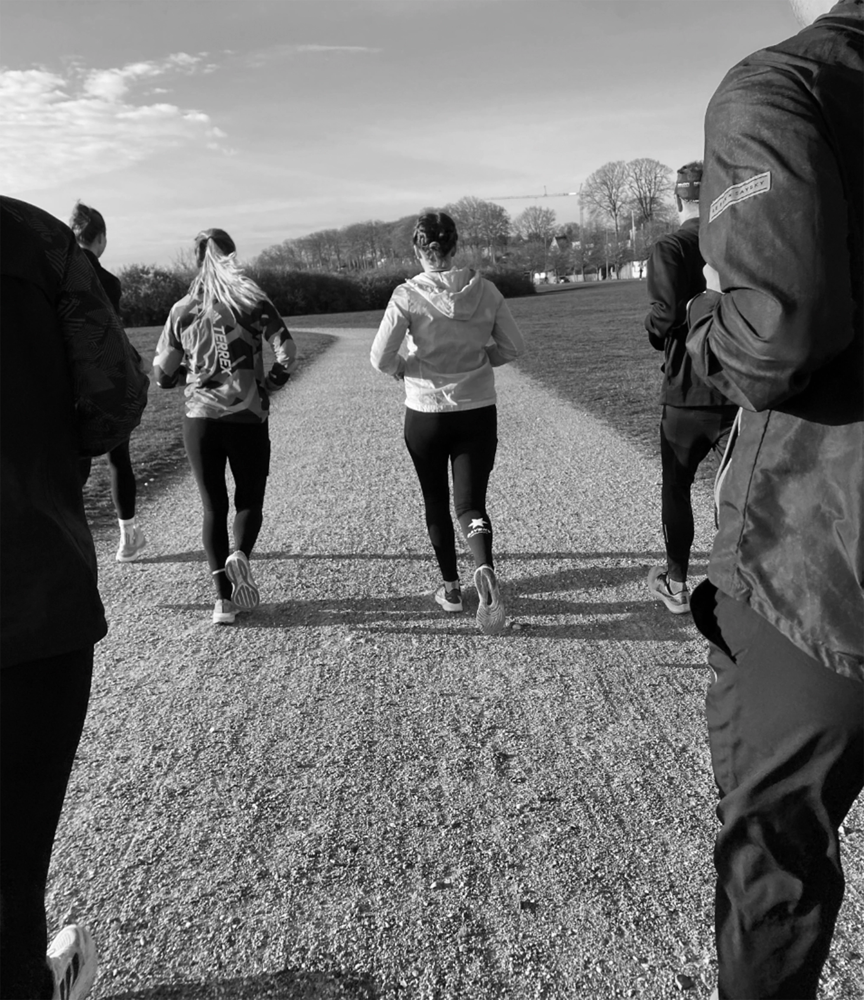

Vi har gennem vores arbejde med alkoholfri øl, også fået mere fokus på vores gennerelle fysiske sundhed. Vi startede derfor med at lave en lille løbeklub for vores ansatte. Da dette var en stor succes, besluttede vi at den skulle være åben for alle, der havde lyst til at være med.
Dette er et løbe fællesskab for alle - lige meget om du er nybegynder, øvet, ung eller gammel.
Vi løber i fællesskab i roligt tempo ca. 5km.
Vi løber hver anden søndag klokken 10
Efterfølgende afslutter vi med et valgfri glas alkoholfri øl, som er perfekt til at genopbygge væskebalancen og få salt efter løb.
Vi håber at vi ses!
